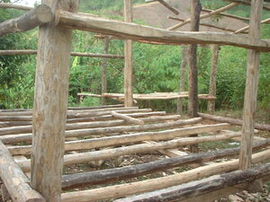

bantal 
/bantal/
v_rt.
“be_anxious”
n.
worry; doubt
Eng. worry; doubt
Online dict status: -
Usage level: F
v.
for someone or something (egbantal, migbantal/imbantal, bantal, agent, eg><ø-) to cause someone else to be unconfident (egbantalen, imbantal/migbantal/pigbantal, patient, eg><en-) in doing something
Eng. unconfident, cause to
Online dict status: -
Usage level: M
v.
for a person (egkabantali, nabantali, mabantali, agent, egkA><i-) to be anxious
Wrd.Gloss: anxious
Kenè kew egkabantali ne eg-uugpè te baley ku.
Don't be anxious about staying in my house.
Data Qual: This next example seems like it might have too many su's? [RJH]
Kenè kew e kabantali su kuntee malinawen kid e.
Don't be anxious now because we are already in peace.
Eng. anxious; worried; concerned; alarmed; unconfident; anxiety
OCM: Drivers and Emotions (152)
DDP: Worried (3.4.2.4.1)
Online dict status: -
Usage level: M
v.
for someone (egkabantalan, nabantalan, mabantali, agent, egkA><an-) to be worry or feel uncomfortable about something else
Egkabantalan ki ne eg-ugpè ke due kunterè ta.
We will be concerned about it if we have an enemy.
Cult. e.g. when one's spouse is away or for a married couple to stay awake long into the night–this is often necessary if they want to have marital relations so that they may wait until the others in the room have gone to sleep.
O. Syn. iwalen
Eng. worry; feel uncomfortable; uncomfortable, feel
Online dict status: -
Usage level: M
v.
for something (egpakabantal, nakabantal, agent, egpAkA-) that can make someone to be uncomfortable (igpakabantal, impakabantal, reason, igpAkA-)
Eng. uncomfortable
Online dict status: -
Usage level: M
Updated by: RJH,AAA,RUL,RJH,NJK,QDL,RJH,QDL,RJH,QDL,RJH
Last updated: 20/Apr/2016
This page last updated: 28-Dec-2019
Copyright © 2009-2014, Matigsalug Language Christian Association, Inc